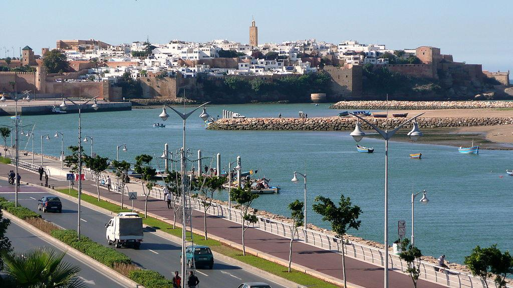
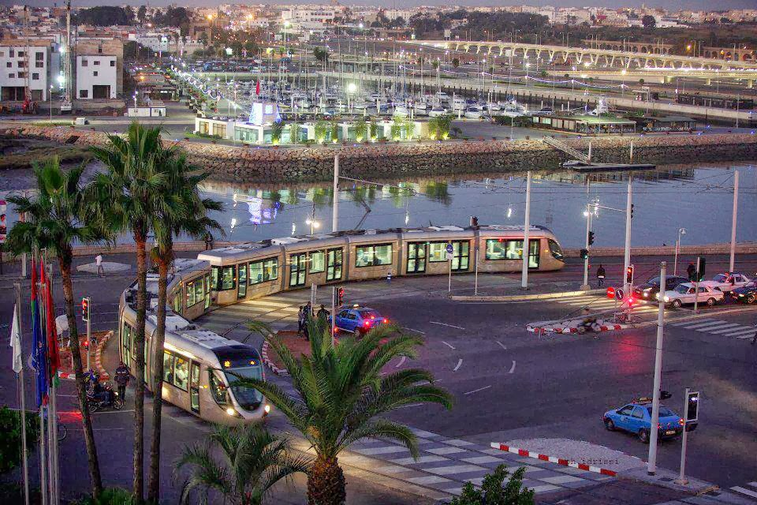
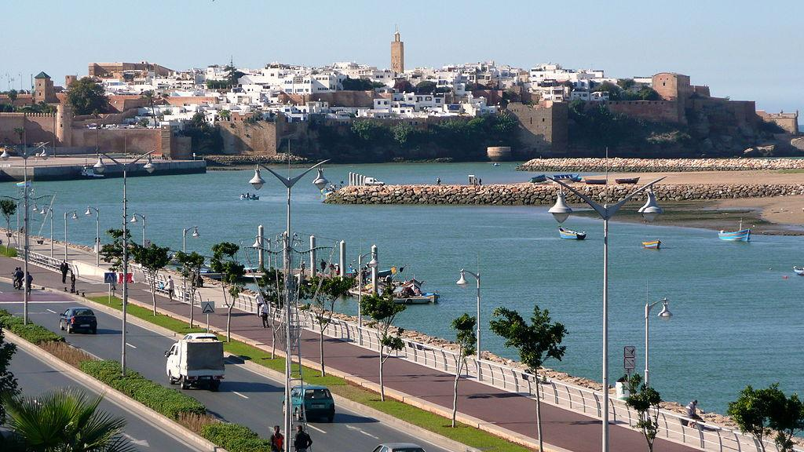
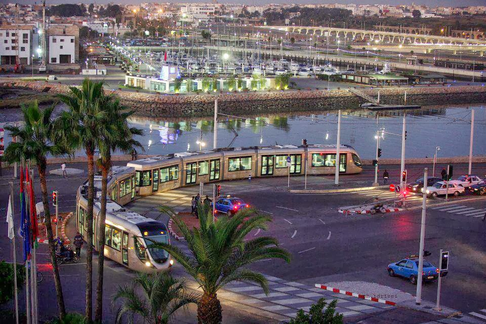

 La Ville de Rabat
La Ville de Rabat
Rabat (en arabe : الرباط, Ar-Ribaṭ ; en tamazight : ⴻⵔⵔⴱⴰⵟ, Errbaṭ) est l’une des quatre villes impériales du Maroc. Son ancienne médina, bordant l’Océan Atlantique, témoigne de son histoire pluri centenaire, alors que la Kasbah des Oudayas avoisinant expose encore, à travers ses fortifications, les activités des corsaires jusqu’au XIXème siècle. Et pourtant, l’ambiance tranquille de la capitale du Maroc ne laisse en rien deviner qu’elle fut, avec Salé, le noyau d’une activité de corsaires intense !